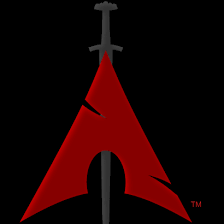
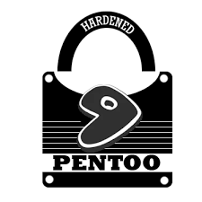
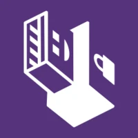

Explorando o Mundo Linux
Distribuições, tutoriais e o ecossistema open-source

Kali Linux
Kali Linux é uma distribuição GNU/Linux baseada no Debian

Parrot
O Parrot é uma ramificação de "testes" do Debian com um núcleo (kernel)

BlackArch
O BlackArch é uma distribuição de testes de penetração baseada no Arch Linux

PENTOO
O Pentoo é um Live CD com o foco na segurança da informação.

RHEL
Red Hat Enterprise Linux, focado em estabilidade empresarial.

Tails OS
Tails, The Amnesic Incognito Live System, é uma distribuição Linux baseada no Debian.